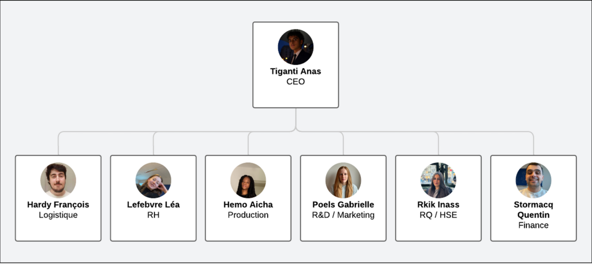

SunnySqueeze a été fondée en 2020 avec la mission de produire des jus de fruits locaux, naturels et savoureux. Nous valorisons les produits de notre terroir et soutenons les petits producteurs locaux.
Notre équipe est composée de 7 collaborateurs passionnés, chacun jouant un rôle clé dans le succès de notre entreprise.
Nos jus sont disponibles dans des magasins de proximité, des distributeurs automatiques, des restaurants et des épiceries fines.